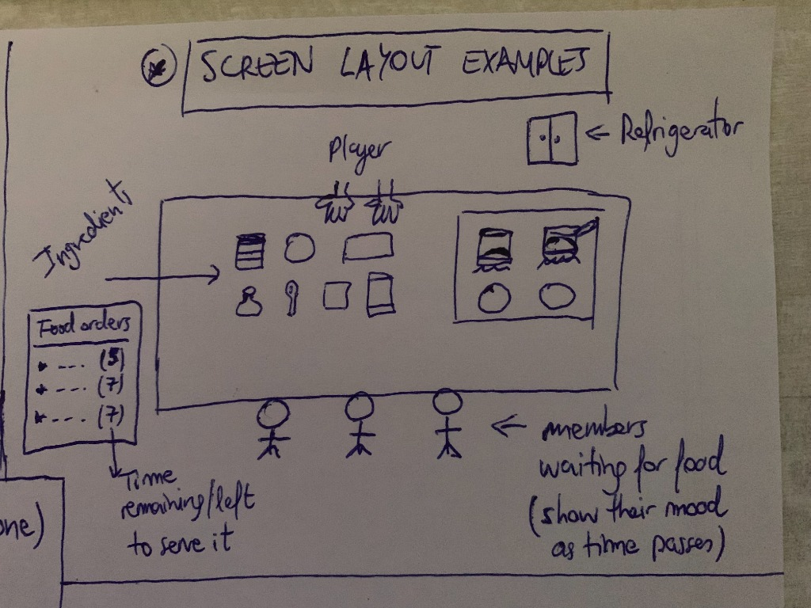

From the paper sketch
The original screen layout. Click the numbered hotspots to read what each element does and jump to it in the playable prototype.

Play the layout
Same structure as the sketch: orders on the left, the player working behind the counter, ingredients and stoves/plates on the counter, the fridge top-right and the family waiting at the bottom. Click things – the chef runs over and does the job.
⌨️ Shortcuts: P pause · Esc close fridge/drawer · Q throw away what you hold.
Family moods over time
Each family member has a patience meter. As it drains, their face, body language and animations escalate. Drag the slider (or press play) to watch someone get hungrier while you cook.
All mood states
Pupils follow the chef across the kitchen. Hungry members stare harder – a constant, subtle reminder.
Kids drain fastest (≈42s), grandparents slowest (≈75s). Later in the round, everyone becomes up to 30% less patient.
Serving someone happy earns the biggest tip. Letting anyone storm off costs a heart – lose 3 and the shift is over.
Food orders & urgency
The order panel is the player's to-do list. Each ticket shows the dish, who ordered it, the ingredients needed and the seconds left – exactly like the (5) (7) numbers in the sketch. Tickets auto-sort so the most urgent is always on top.
Green bar, ticket sits still. Plenty of time.
Amber, ticket wobbles gently, timer turns bold.
Red, flashing, shaking, ticking sound and a red vignette around the whole screen.
Live countdown
A 20-second order running out on loop. Notice how the feedback layers stack up as time drains: colour → motion → sound → whole-screen alarm.
Cooking flow & recipe book
Every dish follows the same loop. Ingredients may need preparing with a utensil before they go on a plate. The player can only carry one thing at a time – that's where the frenzy comes from.
Recipe book (click a card to see the step-by-step)
Fridge & utensils
The counter only holds the basics. Anything perishable – or anything you ran out of – lives in the refrigerator. Tools live in the utensil drawer and must be set up on the right station before certain recipes can be cooked.
Refrigerator
- Click it → chef walks over → doors swing open.
- Holds fridge-only ingredients: 🧀 cheese, 🥚 eggs, 🥩 meat.
- Backup stock of 🍅 and 🥬 when the counter is empty.
- It's at the far end of the kitchen: every trip costs precious seconds.
Utensil drawer
- 🔪 Knife → put on the cutting board to unlock chopping.
- Frying pan → put on a stove to fry eggs and meat.
- Cooking pot → put on a stove to boil potatoes and rice.
- Stoves can be re-equipped: take the pan off, put the pot on – a strategic choice when orders change.
Station matrix
Trying to use a station without its utensil shows an in-game hint, so players learn the rule by doing.
Visual style: Overcooked-style frenzy
Chunky outlines, saturated colours, bouncy everything. Feedback should be loud and instant – the player's eyes are darting between orders, stoves and faces, so every important event needs colour, motion and sound.
Palette
#FF5A3C
#FFC93C
#2EC4B6
#23264A
#FFF4E0
#2B1D14
Principles
- Thick ink outlines (4px) + hard drop shadows make objects read instantly.
- Everything bounces: pick-ups pop, the chef bobs while running, stoves rattle.
- Colour = state: green calm → amber warning → red panic, used consistently on tickets, bars and faces.
- Escalating chaos: more orders, less patience, louder alarms as the round progresses.